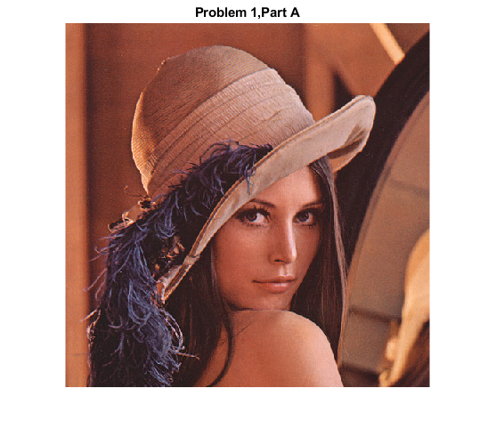
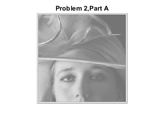
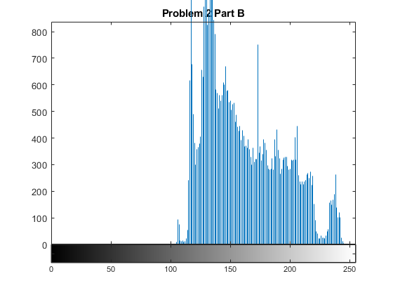
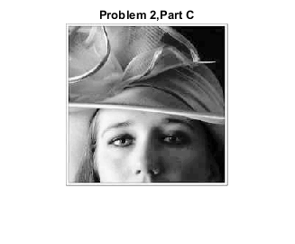
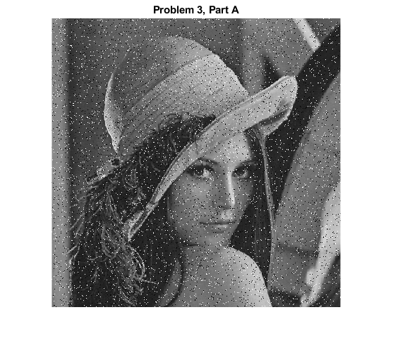
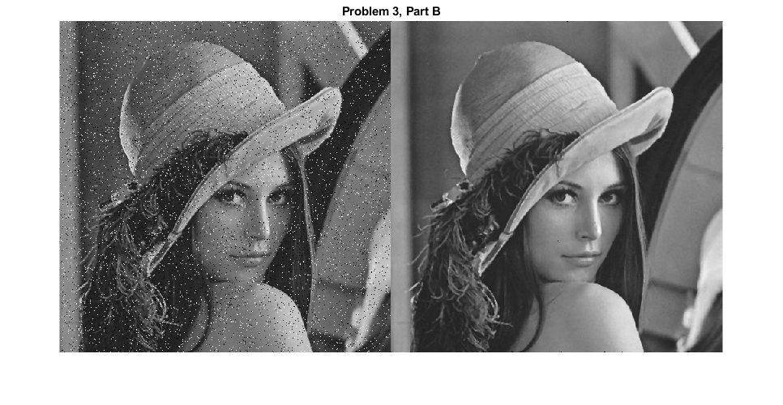
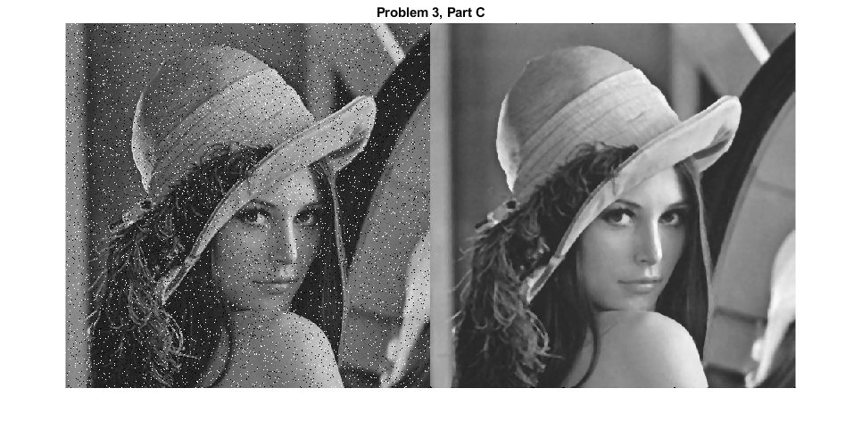

A = imread('lena.bmp');
figure
imshow(A);
title('Problem 1,Part A')
% part b
grayed = rgb2gray(A);
figure
imshow(grayed);
title('Problem 1,Part B')
% part c
grayed = my_grayscale(A);
figure
imshow(grayed);
title('Problem 1,Part C')
imwrite(grayed, 'my_grayed.jpg');
A = imread('lowcontrast.jpg');
figure
imshow(A);
title('Problem 2,Part A')
% Part B
figure
imhist(A)
title('Problem 2 Part B')
% Part C
enhanced = histeq(A);
figure
imshow(enhanced);
title('Problem 2,Part C')  
I = imread('my_grayed.jpg');
J = imnoise(I, 'salt & pepper', .05);
figure
imshow(J);
title('Problem 3, Part A')
% part b
K = medfilt2(J);
figure
imshowpair(J, K, 'montage')
title('Problem 3, Part B')
% part c
M = medfilt2(J, [5 5]);
figure
imshowpair(J, M, 'montage')
title('Problem 3, Part C')
% making the window size larger makes the image blurier  
function G = my_grayscale(a)
G = 0.3*a(:,:,1) + 0.6*a(:,:,2) + 0.1*a(:,:,3);
end